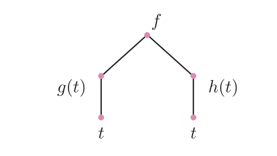
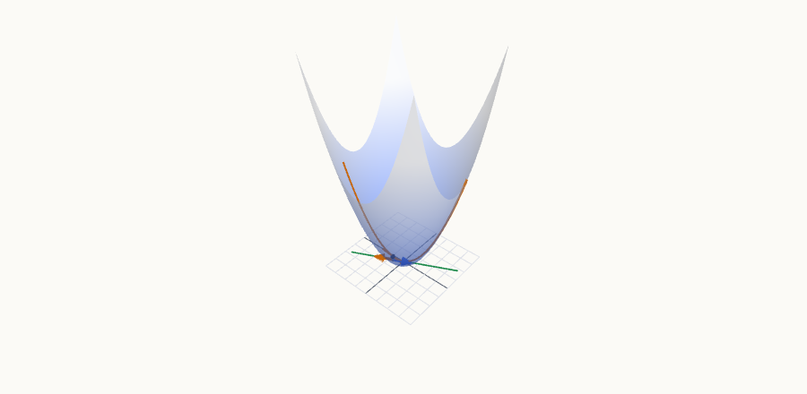
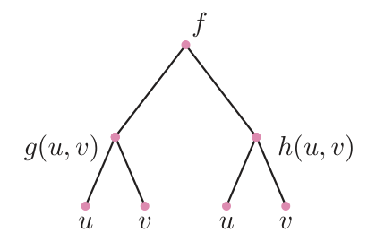
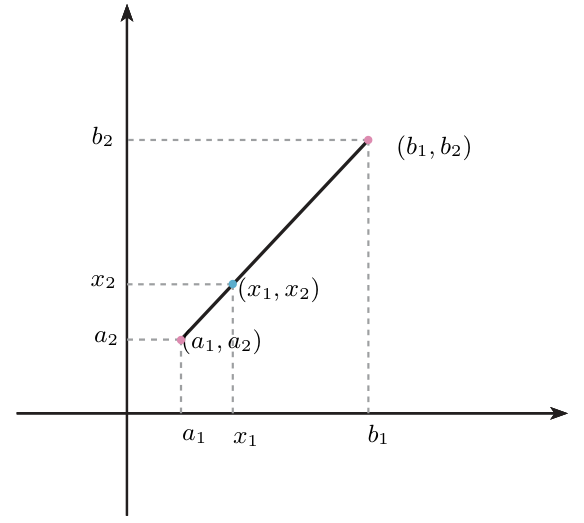
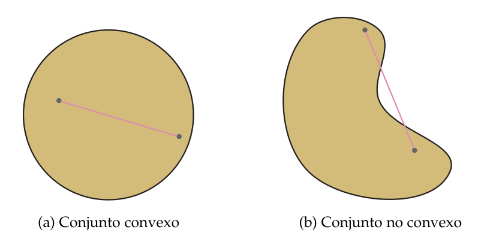
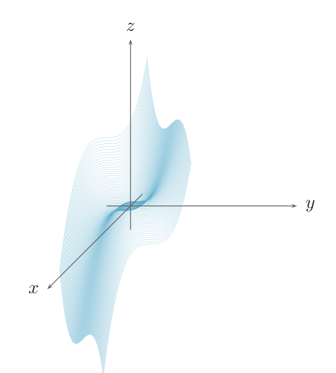

Regla de la cadena. Teorema del valor medio
Cómo se derivan funciones compuestas de varias variables (diagrama de caminos y producto de matrices) y cómo se controla cuánto cambia una función entre dos puntos usando su gradiente sobre el segmento que los une.
0Antes de empezar U p.194
Una función de varias variables suele estar «construida en capas»: por ejemplo, la temperatura $f$ depende de la posición $(x,y)$, y la posición depende del tiempo $t$. Si quieres saber a qué ritmo cambia la temperatura con el tiempo, tienes que sumar dos efectos: lo que cambia $f$ porque se mueve $x$ y lo que cambia porque se mueve $y$. Eso es la regla de la cadena: un sumando por cada «camino» que une el tiempo con la temperatura. La segunda mitad del tema responde a otra pregunta: si conozco el gradiente, ¿puedo comparar los valores de $f$ en dos puntos sin calcularlos? El teorema del valor medio lo permite: la diferencia $f(\bar a)-f(\bar b)$ es «gradiente en un punto intermedio por el desplazamiento».
PQué necesitas saber ya
- Diferencial, gradiente y plano tangente (tema 5.1): $Df(\bar a)(\bar x)=\nabla f(\bar a)\cdot\bar x$.
- Derivadas parciales y gradiente (tema 4.3), y polares (tema 4.1): $x=\rho\cos\theta$, $y=\rho\operatorname{sen}\theta$.
- Regla de la cadena de una variable (tema 2.2): $(g\circ f)'(a)=g'(f(a))\,f'(a)$.
- Teorema del valor medio de una variable y funciones crecientes (tema 2.5): $f'(c)=\frac{f(b)-f(a)}{b-a}$, y $f'>0\Rightarrow f$ creciente.
- Producto de matrices (fila $1\times2$ por matriz $2\times n$) y desigualdad triangular $|x+y|\le|x|+|y|$.
Mapa del tema
| Apartado | Qué contiene | Dónde está |
|---|---|---|
| 1 Reglas de la diferencial | suma, producto, cociente; Ej. 5.5 | U pp.194-195 |
| 2 Cadena: diagrama de caminos | una y dos variables finales; Ej. 5.6, 5.7 | U pp.196-199 |
| 3 Cadena como producto de matrices | caso general; Ej. 5.8; jacobiana de la composición | U pp.198-200 |
| 4 Teorema del valor medio | segmento, convexo, TVM, signo del gradiente; Ej. 5.9 | U pp.200-203 |
| 5 Recetas | cómo derivar una composición y cómo usar el TVM | síntesis |
| 6 Ejercicios de E | 5.13-5.22 (10 ejercicios) | E pp.179-186 |
| 7 Ejemplos propios | 4 ejemplos | propio |
| 8 Examen | 11 problemas de X | X |
| 9 Chuleta y comprobación | fórmulas, errores, lista | síntesis |
Qué se pide en los ejercicios y en el examen
(A) Gradiente de una composición en un punto o en general, con la regla de la cadena (E 5.15-5.19; X: «calcule el gradiente de…» casi cada convocatoria). (B) Reglas de la diferencial para combinar valores y gradientes conocidos (E 5.13-5.14). (C) Teorema del valor medio: demostraciones y preguntas del tipo «¿crece $f$ si me muevo hacia el primer cuadrante?» (E 5.20-5.22; X p.86). Esta sección es la base de la función implícita (§5.3).
1Las reglas de la diferencial: suma, producto y cociente U pp.194-195
En una variable sabes que $(fg)'=f'g+fg'$. Para derivar parcialmente en $x$ se deja $y$ fija y se deriva como en una variable, así que la misma regla vale en cada parcial; al juntar las dos parciales en un vector, el $'$ se convierte en $\nabla$. No hay nada nuevo salvo una cosa: hay que saber que $f+g$, $cf$, $fg$ y $f/g$ siguen siendo diferenciables, y por eso su plano tangente y su diferencial se calculan con estas reglas.
PSi $f,g$ son diferenciables en $\bar a$ y $c\in\mathbb R$, entonces $f+g$, $cf$ y $f\cdot g$ son diferenciables en $\bar a$ y $$D(f+g)(\bar a)=Df(\bar a)+Dg(\bar a),\quad D(cf)(\bar a)=c\,Df(\bar a),\quad D(f\cdot g)(\bar a)=Df(\bar a)\,g(\bar a)+f(\bar a)\,Dg(\bar a).$$ Si además $g(\bar a)\neq0$, $f/g$ es diferenciable y $$D\!\left(\frac fg\right)(\bar a)=\frac{Df(\bar a)\,g(\bar a)-f(\bar a)\,Dg(\bar a)}{\big(g(\bar a)\big)^2}.$$ Como $Df(\bar a)(\bar x)=\nabla f(\bar a)\cdot\bar x$, lo mismo vale para gradientes: $\nabla(fg)=g\nabla f+f\nabla g$, $\nabla(f/g)=\dfrac{g\nabla f-f\nabla g}{g^2}$.
U pp.194-195- Con $m(x,y)=x$ y $j(x,y)=y$: $Dm(0,0)(h,k)=h$ y $Dj(0,0)(h,k)=k$.
- Suma y múltiplo: $Df(0,0)(h,k)=h+2k$.
- Cociente con $g=\frac jn$, $n=m+1$ ($n(0,0)=1$): $Dg(0,0)(h,k)=\dfrac{k\cdot(0+1)-0\cdot h}{(0+1)^2}=k$.
Calcular directamente el gradiente es más corto; el interés de estas reglas es teórico (saber que la combinación es diferenciable) y para datos «abstractos» como en E 5.14.
U p.195En el producto, multiplicar cada gradiente por su propia función ($f\nabla f+g\nabla g$) en lugar de por la otra ($g\nabla f+f\nabla g$). En el cociente, olvidar el $g^2$ o cambiar el orden de la resta del numerador (es «de arriba por la derivada de abajo» con signo menos).
P2Regla de la cadena: un sumando por cada camino U pp.196-199
Dibuja $f$ arriba, las variables intermedias en medio y las variables finales abajo. Para saber cómo influye una variable de abajo en $f$, recorre todos los caminos que suben hasta $f$. Cada camino aporta un sumando: el producto de las derivadas de cada tramo. Es como contar las vías por las que una noticia llega de una persona a otra: cada vía contribuye, y todas se suman. Con $t$ abajo, $x=g(t)$ e $y=h(t)$ en medio y $f$ arriba, hay dos caminos ($t\to x\to f$ y $t\to y\to f$), así que dos sumandos.
U pp.196-198
Si $f(x,y)$ es de dos variables y se compone con $x=g(t)$, $y=h(t)$: $$\frac{df}{dt}\big(g(t),h(t)\big)=\frac{\partial f}{\partial x}\big(g(t),h(t)\big)\,g'(t)+\frac{\partial f}{\partial y}\big(g(t),h(t)\big)\,h'(t).$$ Las letras $x,y$ son «variables mudas»: las parciales de $f$ se calculan con ellas y después se evalúan en $(g(t),h(t))$.
U p.196- Intermedias: $g(t)=e^t$, $h(t)=1+t^2$; $g'(t)=e^t$, $h'(t)=2t$.
- Parciales de $f$: $\frac{\partial f}{\partial x}=\frac1{2\sqrt{x+2y}}$, $\frac{\partial f}{\partial y}=\frac1{\sqrt{x+2y}}$.
- Cadena y sustituir $x=e^t$, $y=1+t^2$: $$\frac{df}{dt}=\frac1{2\sqrt{e^t+2(1+t^2)}}\,e^t+\frac1{\sqrt{e^t+2(1+t^2)}}\,2t.$$

Dos variables finales

Para $f\big(g(u,v),h(u,v)\big)$: $$\frac{\partial f}{\partial u}=\frac{\partial f}{\partial x}\,\frac{\partial g}{\partial u}+\frac{\partial f}{\partial y}\,\frac{\partial h}{\partial u},\qquad \frac{\partial f}{\partial v}=\frac{\partial f}{\partial x}\,\frac{\partial g}{\partial v}+\frac{\partial f}{\partial y}\,\frac{\partial h}{\partial v},$$ con $\frac{\partial f}{\partial x},\frac{\partial f}{\partial y}$ evaluadas en $(g(u,v),h(u,v))$. Regla del diagrama: la derivada respecto de una variable de la base tiene tantos sumandos como caminos hay desde ella hasta $f$, y cada sumando es el producto de las derivadas a lo largo del camino.
U pp.197-198(i) Evaluar las parciales de $f$ en $(u,v)$ en lugar de en $(g(u,v),h(u,v))$. (ii) Olvidar un camino (por ejemplo, si una entrada de $f$ es la propia variable, $x$, ese camino también cuenta, con derivada $1$). (iii) Dejar el resultado mezclando $x$, $y$ con $t$ (o $u,v$).
PAquí la primera intermedia es $g(x)=x$ (derivada $1$): $\dfrac d{dx}f(x,h(x))=\dfrac{\partial f}{\partial x}(x,h(x))+\dfrac{\partial f}{\partial y}(x,h(x))\,h'(x)$. Con $f=xy^2$ y $h=e^x$: $y^2+2xy\,e^x$ evaluado en $y=e^x$ da $e^{2x}+2xe^{2x}=(2x+1)e^{2x}$.
U p.1993La cadena como producto de matrices U pp.198-200
En una variable, $(f\circ g)'=f'(g)\cdot g'$: derivada de fuera (evaluada en lo que hay dentro) por derivada de dentro. En varias variables ocurre lo mismo, pero «derivada» pasa a ser una matriz: el gradiente de $f$ es una fila $1\times2$ y las derivadas de las dos intermedias forman una matriz $2\times n$ (una fila por intermedia, una columna por variable final). El producto fila $\times$ matriz hace automáticamente la suma «un sumando por camino» del apartado anterior.
PSi $g,h$ son diferenciables en $\bar a=(a_1,\dots,a_n)$ y $f$ es diferenciable en $(g(\bar a),h(\bar a))$, entonces $f(g,h)$ es diferenciable en $\bar a$ y $$\nabla\big(f(g,h)\big)(\bar a)=\nabla f\big(g(\bar a),h(\bar a)\big)\begin{pmatrix}\nabla g(\bar a)\\[2pt]\nabla h(\bar a)\end{pmatrix}.$$ ($\nabla f$ es $1\times2$; la matriz es $2\times n$ con filas $\nabla g(\bar a)$ y $\nabla h(\bar a)$.) Con $n=1$, la matriz es la columna $(g';h')$ y se recupera la fórmula de $\frac d{dx}f(g(x),h(x))$.
U p.198Si $g_1,\dots,g_m$ son diferenciables en $\bar a$ y $f$ (de $m$ variables) es diferenciable en $(g_1(\bar a),\dots,g_m(\bar a))$, entonces $f(g_1,\dots,g_m)$ es diferenciable en $\bar a$ y $$\nabla\big(f(g_1,\dots,g_m)\big)(\bar a)=\nabla f\big(g_1(\bar a),\dots,g_m(\bar a)\big)\begin{pmatrix}\nabla g_1(\bar a)\\ \vdots\\ \nabla g_m(\bar a)\end{pmatrix}.$$ Generaliza la regla de una variable, porque allí el gradiente es la derivada.
U p.200- Punto imagen: $(g(0,0),h(0,0))=(0,3)$, y $\nabla f=(2,2)$ en todas partes.
- Gradientes en $(0,0)$: $\nabla g=(v,u)=(0,0)$; $\nabla h=(\cos u,0)=(1,0)$.
- Producto: $\nabla\big(f(g,h)\big)(0,0)=(2,2)\begin{pmatrix}0&0\\1&0\end{pmatrix}=(2,0)$.
Si hay varias funciones de fuera $f_1,\dots,f_p$ (todas de $m$ variables) y llamamos $F_i=f_i(g_1,\dots,g_m)$, cada $F_i$ se deriva con la regla anterior; apilando las filas resulta (la matriz jacobiana de una función con varias componentes es la que tiene por filas los gradientes de sus componentes) $$\begin{pmatrix}\nabla F_1\\ \vdots\\ \nabla F_p\end{pmatrix}(\bar a)=\underbrace{\begin{pmatrix}\nabla f_1\\ \vdots\\ \nabla f_p\end{pmatrix}\!\big(g_1(\bar a),\dots,g_m(\bar a)\big)}_{\text{la de fuera, en el punto imagen}}\ \underbrace{\begin{pmatrix}\nabla g_1(\bar a)\\ \vdots\\ \nabla g_m(\bar a)\end{pmatrix}}_{\text{la de dentro}}$$ Orden: fuera $\times$ dentro. (Ver Propio 2.)
PPara el gradiente en un punto concreto, la forma matricial es la más limpia (evalúas todo en números y multiplicas). Para una derivada en función de $t$ o para identidades con una $f$ genérica, escribe los sumandos con el diagrama. Si todo sale en función de una fórmula sencilla, sustituir antes de derivar sirve de comprobación.
P4Teorema del valor medio en dos variables U pp.200-203
En una variable: si recorres 100 km en 2 h, en algún instante ibas exactamente a 50 km/h (velocidad media = velocidad en algún punto). Dicho al revés: $f(b)-f(a)=f'(c)(b-a)$, y por tanto, si sabes que $|f'|\le M$, la variación nunca supera $M|b-a|$. En el plano, el «intervalo» pasa a ser el segmento que une dos puntos, y la derivada, el gradiente: a lo largo del segmento la función cambia como si el gradiente tuviera un valor «medio» $\nabla f(c,d)$ en algún punto del segmento. Con eso se puede acotar cuánto cambia $f$ (tamaño del gradiente) y decidir si sube o baja (signo de sus componentes), sin calcular $f$.
PEl segmento que une $(a_1,\dots,a_n)$ y $(b_1,\dots,b_n)$ es el conjunto de puntos $(1-\lambda)(a_1,\dots,a_n)+\lambda(b_1,\dots,b_n)$, con $\lambda\in[0,1]$. En $\mathbb R^2$: $(x_1,x_2)$ está en el segmento si existe $\lambda\in[0,1]$ con $x_1=(1-\lambda)a_1+\lambda b_1$ y $x_2=(1-\lambda)a_2+\lambda b_2$ (con $\lambda=0$ sale $\bar a$ y con $\lambda=1$, $\bar b$). En $\mathbb R$, el segmento entre $0$ y $1$ es $[0,1]$.
U pp.200-201
$D\subset\mathbb R^n$ es convexo si para cualquier par de puntos de $D$ el segmento que los une está contenido en $D$. Son convexos los discos, las bolas, las rectas, los planos (y $\mathbb R^2$); la circunferencia no lo es. Prueba mental: pon una goma elástica entre dos puntos del conjunto; si alguna vez se sale, no es convexo.
U p.201
Sea $f:D\subset\mathbb R^2\to\mathbb R$ continua y con derivadas parciales continuas en $D$. Si el segmento que une $(a_1,a_2)$ y $(b_1,b_2)$ de $D$ está contenido en $D$, existe un punto $(c,d)$ de ese segmento tal que $$f(a_1,a_2)-f(b_1,b_2)=\nabla f(c,d)\cdot(a_1-b_1,\,a_2-b_2).$$ Qué hay que comprobar al usarlo: (1) $f$ y sus parciales continuas; (2) el segmento entero está en el conjunto donde valen esas hipótesis (por eso se trabaja en convexos). No se sabe dónde está $(c,d)$; solo que existe.
U p.202En un conjunto convexo $A$ donde $f$ cumple las hipótesis del TVM: si las dos componentes de $\nabla f$ son estrictamente positivas, entonces $f(a_1,a_2)>f(b_1,b_2)$ para cualesquiera $(a_1,a_2),(b_1,b_2)\in A$ con $a_1>b_1$ y $a_2>b_2$. Si las dos son estrictamente negativas, $f(a_1,a_2)\lt f(b_1,b_2)$. Lectura: moverse en la dirección de cualquier vector del primer cuadrante hace crecer $f$ (positivas) o decrecer $f$ (negativas).
Por qué: en el TVM, $\nabla f(c,d)\cdot(a_1-b_1,a_2-b_2)=f_x(c,d)(a_1-b_1)+f_y(c,d)(a_2-b_2)$ es una suma de dos productos de números positivos.
U pp.202-203$\nabla f=(3x^2,3y^2)$: las dos componentes son $>0$ cuando $x\ne0$ e $y\ne0$. Cada cuadrante abierto es convexo; por ejemplo, en el primero ($x>0,y>0$), $f$ crece al moverse en la dirección de vectores del primer cuadrante. En los ejes ($xy=0$) una componente se anula y el criterio no se puede aplicar (es solo una condición suficiente: aquí $f$ crece de todos modos al aumentar las dos coordenadas, porque $x^3$ e $y^3$ son crecientes).
U p.203
(i) Aplicar el TVM sin comprobar que el segmento está dentro de un conjunto donde las parciales son continuas. (ii) Mirar solo una componente del gradiente: si una es positiva y la otra negativa, no se concluye nada. (iii) Creer que $(c,d)$ es el punto medio o que se puede calcular.
P5Recetas del tema P
- Nombrar: variables intermedias ($x=g(\dots)$, $y=h(\dots)$) y finales ($t$, o $u,v$).
- Dibujar el árbol: $f$ arriba, intermedias en medio, finales abajo.
- Contar caminos desde la variable final hasta $f$: cada camino es un sumando, producto de las derivadas que recorre.
- Evaluar bien: las parciales de $f$ en $(g(\bar a),h(\bar a))$, no en $\bar a$.
- En un punto concreto: $\nabla\big(f(g,h)\big)(\bar a)=\nabla f(\text{punto imagen})\cdot\big[\nabla g(\bar a);\nabla h(\bar a)\big]$.
Comprobar que $f$ y sus parciales son continuas en un convexo que contiene el segmento. Entonces $f(\bar a)-f(\bar b)=\nabla f(\bar c)\cdot(\bar a-\bar b)$, y el signo (gradiente con componentes de un solo signo) o el tamaño (cota de las parciales y desigualdad triangular) de ese producto escalar responde a la pregunta. Para «gradiente nulo $\Rightarrow$ constante»: TVM entre dos puntos cualesquiera.
6Ejercicios del libro, resueltos E pp.179-186
Están en el orden del libro. Orden recomendado para aprender: 5.13 → 5.14 (reglas suma/producto/cociente) → 5.16 → 5.15 (cadena con una variable final) → 5.18 → 5.19 (gradiente de una composición en un punto) → 5.17 (cadena con $f$ genérica) → 5.21 → 5.22 (signo del gradiente) → 5.20 (demostración con el TVM).
Ejercicio 5.13 · gradiente de un producto E p.179
Si $f$ y $g$ son funciones de dos variables diferenciables en un punto $(a,b)$, entonces el gradiente en $(a,b)$ de la función producto $fg$ verifica: a) $\nabla(fg)(a,b)=\nabla f(a,b)\nabla g(a,b)$. b) $\nabla(fg)(a,b)=\nabla f(a,b)+\nabla g(a,b)$. c) $\nabla(fg)(a,b)=g(a,b)\nabla f(a,b)+f(a,b)\nabla g(a,b)$. d) $\nabla(fg)(a,b)=g(a,b)\nabla f(a,b)-f(a,b)\nabla g(a,b)$.
- Qué me piden
- Elegir cuál de cuatro fórmulas es el gradiente del producto $fg$ en $(a,b)$.
- Cómo lo pienso
- Cada derivada parcial se calcula dejando fija la otra variable, así que es una derivada de una variable y vale la regla del producto de siempre, $(fg)'=f'g+fg'$. El gradiente es el vector de las dos parciales.
- Qué uso
- Reglas de la diferencial para suma, producto y cociente (U pp. 194-195).
- Por dónde empiezo
- Escribir $\frac{\partial(fg)}{\partial x}$ con la regla del producto y comprobar después las opciones con $f=x$, $g=y$.
- Por qué vale en cada parcial. Para $\frac{\partial(fg)}{\partial x}$ se deja $y$ fija y se deriva en $x$ como en una variable: $\frac{\partial(fg)}{\partial x}=\frac{\partial f}{\partial x}g+f\frac{\partial g}{\partial x}$; lo mismo en $y$.
- Juntar en un vector: $\nabla(fg)=g\,\nabla f+f\,\nabla g$. (U p. 195.)
- Descartar las demás con un ejemplo numérico: $f=x$, $g=y$, punto $(2,3)$: $\nabla(xy)(2,3)=(3,2)$. Opción c): $3(1,0)+2(0,1)=(3,2)$, coincide. b): $(1,1)$, no. d): $(3,-2)$, no. a): el «producto» de dos vectores fila no es un vector.
Respuesta: c).
Elegir d), que es el numerador de la regla del cociente.
Ejercicio 5.14 · planos tangentes de $f+g$, $fg$ y $f/g$ con datos en un punto E pp.180-181
De dos funciones diferenciables $f,g:\mathbb R^2\to\mathbb R$ se sabe que $f(1,2)=9$, $g(1,2)=2$, $\nabla f(1,2)=(1,9)$ y $\nabla g(1,2)=(2,5)$. Calcula las ecuaciones del plano tangente a las gráficas de las funciones $f+g$, $fg$ y $f/g$ en el punto de su gráfica $(1,2,(f+g)(1,2))$, $(1,2,(fg)(1,2))$ y $(1,2,(f/g)(1,2))$, respectivamente.
- Qué me piden
- Las ecuaciones de los planos tangentes a $f+g$, $fg$ y $f/g$ en $(1,2)$, conociendo solo valores y gradientes de $f$ y $g$ en ese punto.
- Cómo lo pienso
- No hacen falta las fórmulas de $f$ y $g$: un plano tangente solo necesita el valor y el gradiente de la función en el punto. Los dos salen de combinar los datos con las reglas de suma, producto y cociente.
- Qué uso
- Reglas de suma, producto y cociente de la diferencial (U pp. 194-195) y plano tangente (U (5.2), p. 189): $z=h(a,b)+\nabla h(a,b)\cdot(x-a,y-b)$.
- Por dónde empiezo
- Calcular el valor y el gradiente de $f+g$ (el caso más sencillo) y escribir su plano; repetir con $fg$ y $f/g$.
- Son diferenciables en $(1,2)$: suma y producto de diferenciables lo son; el cociente también porque $g(1,2)=2\ne0$ (U pp. 194-195). Plano: $z=h(1,2)+\nabla h(1,2)\cdot(x-1,y-2)$.
- Suma. Valor $9+2=11$; gradiente $(1,9)+(2,5)=(3,14)$. $$z=11+3(x-1)+14(y-2).$$
- Producto. Valor $9\cdot2=18$; gradiente $g\nabla f+f\nabla g=2(1,9)+9(2,5)=(2,18)+(18,45)=(20,63)$. $$z=18+20(x-1)+63(y-2).$$
- Cociente. Valor $\frac92$; gradiente $\dfrac{g\nabla f-f\nabla g}{g^2}=\dfrac{2(1,9)-9(2,5)}{4}=\dfrac{(-16,-27)}4=\left(-4,-\tfrac{27}4\right)$. $$z=\tfrac92-4(x-1)-\tfrac{27}4(y-2).$$
En el producto, multiplicar cada gradiente por su propia función; en el cociente, olvidar dividir por $g^2$ o cambiar el orden de la resta.
Ejercicio 5.15 · $F(t)=f(x(t),y(t))$ por sustitución y por la cadena E pp.181-182
Sean las funciones dadas por $f(x,y)=x(1-y^2)-y$, $x(t)=e^{2t}$, $y(t)=\frac1t$. A partir de ellas se define $F$ mediante $F(t)=f(x(t),y(t))$. Se pide calcular la derivada de $F(t)$ respecto a $t$ mediante dos procedimientos: 1) sustitución de las expresiones de $x(t)$ e $y(t)$ y derivación posterior y 2) aplicando la regla de la cadena.
- Qué me piden
- La derivada de $F(t)=f(x(t),y(t))$ de dos formas: sustituyendo antes de derivar y con la regla de la cadena.
- Cómo lo pienso
- Son dos caminos al mismo resultado. O se sustituye y queda una función de $t$ que se deriva como siempre, o se suma un término por cada camino $t\to x\to f$ y $t\to y\to f$: «derivada de $f$ por derivada de la intermedia».
- Qué uso
- Regla de la cadena con una variable final (U p. 196): $F'(t)=f_x\,x'+f_y\,y'$, con las parciales evaluadas en $(x(t),y(t))$.
- Por dónde empiezo
- Procedimiento 1: escribir $F(t)=e^{2t}(1-1/t^2)-1/t$ y derivarla. Procedimiento 2: calcular $f_x$, $f_y$, $x'$, $y'$.
Procedimiento 1 (sustituir).
- $F(t)=e^{2t}\left(1-\frac1{t^2}\right)-\frac1t$ (para $t\ne0$).
- Producto y cadena de una variable: $F'(t)=2e^{2t}\left(1-\frac1{t^2}\right)+e^{2t}\frac2{t^3}+\frac1{t^2}=2e^{2t}\left(1-\frac1{t^2}+\frac1{t^3}\right)+\frac1{t^2}$.
Procedimiento 2 (regla de la cadena).
- Árbol: dos caminos de $t$ a $f$ (por $x$ y por $y$): $F'(t)=\frac{\partial f}{\partial x}x'(t)+\frac{\partial f}{\partial y}y'(t)$.
- Parciales: $\frac{\partial f}{\partial x}=1-y^2$, $\frac{\partial f}{\partial y}=-2xy-1$. Intermedias: $x'=2e^{2t}$, $y'=-\frac1{t^2}$.
- Sustituir $x=e^{2t}$, $y=\frac1t$ en las parciales (el paso que más se olvida): $$F'(t)=\left(1-\tfrac1{t^2}\right)2e^{2t}+\left(-\tfrac{2e^{2t}}t-1\right)\left(-\tfrac1{t^2}\right)=2e^{2t}\left(1-\tfrac1{t^2}\right)+\tfrac{2e^{2t}}{t^3}+\tfrac1{t^2}.$$
- Coincide con el procedimiento 1.
Dejar el resultado mezclando $x$, $y$ y $t$, o equivocarse de signo en $y'(t)=-1/t^2$.
Ejercicio 5.16 · derivada de $f(x,h(x))$ E p.182
Sean $f$ y $h$ las funciones dadas por $f(x,y)=x^2+\cos y$ y $h(x)=e^{-x}$. Se pide calcular, aplicando la regla de la cadena, la derivada respecto de $x$ de la composición $f(x,h(x))$.
- Qué me piden
- La derivada respecto de $x$ de $f(x,h(x))$, aplicando la regla de la cadena.
- Cómo lo pienso
- Aunque solo hay una variable, $f$ tiene dos entradas y las dos dependen de $x$: la primera es la propia $x$ (derivada $1$) y la segunda es $h(x)$. Hay dos caminos y se suman.
- Qué uso
- Regla de la cadena con dos intermedias (U Ejemplo 5.7, p. 199), tomando $g(x)=x$, $g'=1$.
- Por dónde empiezo
- Ver $f(x,h(x))$ como $f(g(x),h(x))$ con $g(x)=x$ y calcular $\nabla f$, $g'$ y $h'$.
- Forma de U: $f(g(x),h(x))$ con $g(x)=x$, $h(x)=e^{-x}$. Una variable final, dos intermedias.
- Ingredientes: $\nabla f=(2x,-\operatorname{sen}y)$; $g'=1$; $h'=-e^{-x}$.
- Evaluar $\nabla f$ en $(x,e^{-x})$: $(2x,-\operatorname{sen}e^{-x})$.
- Cadena: $\dfrac d{dx}f(x,h(x))=(2x,-\operatorname{sen}e^{-x})\begin{pmatrix}1\\-e^{-x}\end{pmatrix}=2x+e^{-x}\operatorname{sen}(e^{-x})$.
- Comprobación: $f(x,e^{-x})=x^2+\cos(e^{-x})$ se deriva a $2x-\operatorname{sen}(e^{-x})\cdot(-e^{-x})$. Lo mismo.
Olvidar el sumando $f_x$ («porque $x$ no es una función»), o evaluar $\operatorname{sen}y$ en $y$ en lugar de en $y=h(x)=e^{-x}$.
Ejercicio 5.17 · identidad con $f$ genérica: $2z_u+z_v=0$ E p.183
Sea la función $z$ dada por $z(u,v)=f(u-2v,\,2v-u)$, donde $f:\mathbb R^2\to\mathbb R$ es una función diferenciable, demuestra que $2\dfrac{\partial z}{\partial u}+\dfrac{\partial z}{\partial v}=0$.
- Qué me piden
- Demostrar que $2z_u+z_v=0$ para $z(u,v)=f(u-2v,\,2v-u)$ con $f$ diferenciable cualquiera.
- Cómo lo pienso
- No se conoce $f$, pero no hace falta: la regla de la cadena escribe $z_u$ y $z_v$ con $f_x$ y $f_y$ sin conocerlas. Al combinar las dos expresiones con los coeficientes del enunciado, esas incógnitas se cancelan.
- Qué uso
- Regla de la cadena con dos intermedias y dos variables finales (U p. 198): un sumando por cada camino.
- Por dónde empiezo
- Nombrar $x=u-2v$, $y=2v-u$ y calcular sus cuatro derivadas parciales.
- Intermedias: $x=u-2v$, $y=2v-u$ (polinomios: diferenciables). $f$ es diferenciable por hipótesis, así que se puede aplicar la regla.
- Sus derivadas: $x_u=1$, $x_v=-2$, $y_u=-1$, $y_v=2$.
- Árbol: de $u$ a $z$ hay dos caminos (por $x$ y por $y$); igual desde $v$: $$z_u=f_x\cdot1+f_y\cdot(-1)=f_x-f_y,\qquad z_v=f_x\cdot(-2)+f_y\cdot2=-2f_x+2f_y,$$ con $f_x,f_y$ evaluadas en $(u-2v,\,2v-u)$.
- Combinar: $2(f_x-f_y)+(-2f_x+2f_y)=0$. Queda demostrado.
- Comprobación con un ejemplo (no es demostración): $f=x^2$ da $z=(u-2v)^2$, $z_u=2(u-2v)$, $z_v=-4(u-2v)$ y $2z_u+z_v=0$.
Pensar que hace falta conocer $f$, o escribir $z_u=f_x$ (olvidando el camino por $y$).
Ejercicio 5.18 · gradiente de $f(g,h)$ en $(0,0)$ E pp.183-184
Sean $f,g,h$ las funciones dadas por $f(x,y)=x-y^2$, $g(u,v)=u+uv$ y $h(u,v)=\operatorname{tg}u$. ¿Cuál es el gradiente de $f(g,h)$ en $(u,v)=(0,0)$?
- Qué me piden
- El gradiente en $(0,0)$ de la composición $f(g,h)$.
- Cómo lo pienso
- La composición lleva $(u,v)$ a $(g,h)$ y de ahí a $f$. Su gradiente es «cómo cambia $f$ con sus entradas» multiplicado por «cómo cambian esas entradas con $u$ y $v$».
- Qué uso
- Regla de la cadena en forma matricial (U p. 198): $\nabla f(g(\bar a),h(\bar a))\begin{pmatrix}\nabla g(\bar a)\\\nabla h(\bar a)\end{pmatrix}$.
- Por dónde empiezo
- Calcular el punto imagen $(g(0,0),h(0,0))$ y evaluar $\nabla f$ allí.
- Fórmula: $\nabla\big(f(g,h)\big)(0,0)=\nabla f\big(g(0,0),h(0,0)\big)\begin{pmatrix}\nabla g(0,0)\\\nabla h(0,0)\end{pmatrix}$.
- Punto imagen: $g(0,0)=0$, $h(0,0)=\operatorname{tg}0=0$. Hay que evaluar $\nabla f$ en $(0,0)$ (aquí coincide con el punto de partida por casualidad).
- $\nabla f=(1,-2y)$, así que $\nabla f(0,0)=(1,0)$.
- $\nabla g=(1+v,u)$, $\nabla g(0,0)=(1,0)$; $\nabla h=\big(\frac1{\cos^2u},0\big)$, $\nabla h(0,0)=(1,0)$.
- Producto: $(1,0)\begin{pmatrix}1&0\\1&0\end{pmatrix}=(1\cdot1+0\cdot1,\ 1\cdot0+0\cdot0)=(1,0)$.
- Comprobación: $f(g,h)=u+uv-\operatorname{tg}^2u$; en $(0,0)$: $\partial_u=1+v-2\operatorname{tg}u\frac1{\cos^2u}=1$, $\partial_v=u=0$.
Respuesta: $(1,0)$.
Evaluar $\nabla f$ en $\bar a$ en lugar de en el punto imagen (aquí no se nota porque ambos son $(0,0)$; en el Ej. 5.19 sí).
Ejercicio 5.19 · tres funciones intermedias, gradiente en $(1,0)$ E pp.184-185
Calcula el gradiente en $(u,v)=(1,0)$ de $f(g(u,v),h(u,v),k(u,v))$ para $f(x,y,z)=3x+y+z^2$, $g(u,v)=uv$, $h(u,v)=\operatorname{sen}u+3$ y $k(u,v)=e^u$.
- Qué me piden
- El gradiente en $(1,0)$ de $f(g,h,k)$ con tres funciones intermedias.
- Cómo lo pienso
- Es el mismo esquema que en el 5.18, pero con tres intermedias: cada una aporta una fila a la matriz, y hay una columna por variable final ($u$, $v$).
- Qué uso
- Regla de la cadena general (U p. 200): fila $\nabla f$ ($1\times3$) por matriz de gradientes ($3\times2$).
- Por dónde empiezo
- Calcular el punto imagen $(g,h,k)(1,0)$ y evaluar $\nabla f$ allí.
- Fórmula ($m=3$, $n=2$): fila $1\times3$ por matriz $3\times2$ da una fila $1\times2$.
- Punto imagen: $g(1,0)=0$, $h(1,0)=3+\operatorname{sen}1$, $k(1,0)=e$.
- $\nabla f=(3,1,2z)$ en el punto imagen: $(3,1,2e)$.
- Gradientes en $(1,0)$: $\nabla g=(v,u)=(0,1)$; $\nabla h=(\cos u,0)=(\cos1,0)$; $\nabla k=(e^u,0)=(e,0)$.
- Producto: $$(3,1,2e)\begin{pmatrix}0&1\\\cos1&0\\e&0\end{pmatrix}=\big(3\cdot0+\cos1+2e\cdot e,\ 3\cdot1\big)=(\cos1+2e^2,\ 3).$$
Respuesta: $(\cos1+2e^2,\,3)$.
Escribir $2z=2$ (evaluando en $u=1$ sin aplicar $k$) en lugar de $2z=2e$.
Ejercicio 5.20 · gradiente nulo en un convexo implica función constante E p.185
El teorema del valor medio para funciones de una variable se utiliza para demostrar que una función con derivada cero en un intervalo es constante en ese intervalo. Muestra que una función continua $f:\mathbb R^2\to\mathbb R$ con gradiente nulo en un conjunto convexo es constante en ese conjunto.
- Qué me piden
- Demostrar que una función continua con gradiente nulo en un conjunto convexo es constante en él.
- Cómo lo pienso
- En una variable, derivada cero en un intervalo implica constante gracias al TVM. Aquí se hace igual: el TVM dice que la diferencia de valores entre dos puntos es «gradiente por desplazamiento»; con gradiente cero, la diferencia es cero. El convexo garantiza que el segmento entre los puntos no se sale del conjunto.
- Qué uso
- Definición de convexo (U Def. 5.6, p. 201) y teorema del valor medio en $\mathbb R^2$ (U p. 202).
- Por dónde empiezo
- Tomar dos puntos cualesquiera $\bar a,\bar b$ del conjunto y aplicar el TVM en el segmento que los une.
- Ejemplo concreto primero. $f=7$ en el disco unidad: $\nabla f=(0,0)$ y es constante. ¿Pasa solo con funciones así?
- Hipótesis del TVM en el convexo $A$: $f$ continua; las parciales existen y valen $0$, y una función nula es continua. Hipótesis cumplidas.
- Dos puntos cualesquiera $\bar a,\bar b\in A$. Como $A$ es convexo, el segmento que los une está en $A$.
- TVM: existe $\bar c$ en el segmento con $f(\bar a)-f(\bar b)=\nabla f(\bar c)\cdot(\bar a-\bar b)$.
- Hipótesis: $\bar c\in A$, luego $\nabla f(\bar c)=(0,0)$ y $f(\bar a)-f(\bar b)=0$.
- Conclusión: $f(\bar a)=f(\bar b)$ para todo par de puntos de $A$: $f$ es constante en $A$.
- Por qué importa «convexo»: en un conjunto formado por dos discos separados, $f=0$ en uno y $f=1$ en el otro tiene gradiente nulo y no es constante.
No justificar que el segmento está en el conjunto: ahí es donde se usa la convexidad.
Ejercicio 5.21 · comportamiento de $-x-y$ hacia el primer cuadrante E p.185
Indica cómo se comportará la función $f(x,y)=-x-y$ si nos movemos en la dirección de vectores del primer cuadrante.
- Qué me piden
- Cómo se comporta $f(x,y)=-x-y$ al movernos con vectores del primer cuadrante.
- Cómo lo pienso
- Al avanzar hacia la derecha y hacia arriba, $-x$ y $-y$ bajan las dos: la función tiene que disminuir. El TVM lo justifica mirando el signo de las dos componentes del gradiente.
- Qué uso
- TVM en un convexo y signo del gradiente (U pp. 202-203).
- Por dónde empiezo
- Calcular $\nabla f$ y mirar el signo de sus componentes en $\mathbb R^2$ (convexo).
- Gradiente: $\nabla f=(-1,-1)$, continuo; las dos componentes son $<0$ en todo $\mathbb R^2$.
- $\mathbb R^2$ es convexo.
- Consecuencia del TVM: si $a_1>b_1$, $a_2>b_2$, entonces $f(a_1,a_2)\lt f(b_1,b_2)$. Pasar de $\bar b$ a $\bar a$ es moverse con el vector $(a_1-b_1,a_2-b_2)$, del primer cuadrante.
- Comprobación directa: $f(\bar b+\bar w)-f(\bar b)=-w_1-w_2<0$ si $w_1,w_2\ge0$ no ambos nulos.
Respuesta: decrece al movernos en la dirección de cualquier vector del primer cuadrante.
Mirar solo una componente del gradiente.
Ejercicio 5.22 · $x^2-y^3$: ¿crece o decrece? E pp.185-186
Encuentra la afirmación correcta para la función $f(x,y)=x^2-y^3$ si nos movemos en la dirección de vectores del primer cuadrante: a) Los valores de $f$ decrecen. b) Los valores de $f$ crecen. c) Los valores de $f$ en el interior del segundo cuadrante decrecen. d) Ninguna de las anteriores.
- Qué me piden
- Elegir la afirmación correcta sobre el crecimiento de $f(x,y)=x^2-y^3$ hacia el primer cuadrante.
- Cómo lo pienso
- El signo de las componentes del gradiente cambia de una zona a otra, así que no hay una respuesta global. Hay que buscar una zona convexa donde las dos componentes tengan el mismo signo y contrastar cada opción con ella o con un par de puntos.
- Qué uso
- TVM en un convexo y signo del gradiente (U pp. 202-203).
- Por dónde empiezo
- Calcular $\nabla f=(2x,-3y^2)$ y estudiar el signo de cada componente por zonas.
- Gradiente: $\nabla f=(2x,-3y^2)$.
- Signos: $-3y^2<0$ si $y\ne0$; $2x<0$ si $x<0$. En el interior del segundo cuadrante, $\{x<0,\ y>0\}$, ambas son estrictamente negativas.
- Ese conjunto es convexo: si dos puntos tienen $x<0$ e $y>0$, cualquier punto del segmento tiene $x<0$ (media de negativos) e $y>0$ (media de positivos).
- TVM: allí $f$ decrece hacia el primer cuadrante. Ejemplo: $f(-2,1)=3$ y $f(-1,2)=-7$; al sumar $(1,1)$ baja. c) es cierta.
- a) es falsa: de $(\frac12,\frac12)$ a $(2,1)$ el desplazamiento $(\frac32,\frac12)$ es del primer cuadrante y $f$ pasa de $\frac18$ a $3$: sube.
- b) es falsa: el ejemplo del paso 4 baja. d) es falsa porque c) es cierta.
Respuesta: c).
Concluir «decrece» en todo $\mathbb R^2$ porque la segunda componente es siempre $\le0$, sin mirar la primera.
7Ejemplos propios, de menos a más difícil P
Propio 1 · cadena con polares en un punto P
Sea $f(x,y)=x^2+xy$ y $z(\rho,\theta)=f(\rho\cos\theta,\rho\operatorname{sen}\theta)$. Calcula $\frac{\partial z}{\partial\rho}$ y $\frac{\partial z}{\partial\theta}$ en $\rho=2$, $\theta=\frac\pi4$ con la regla de la cadena.
- Qué me piden
- $z_\rho$ y $z_\theta$ en $(\rho,\theta)=(2,\pi/4)$ para $z=f(\rho\cos\theta,\rho\operatorname{sen}\theta)$.
- Cómo lo pienso
- Pasar a polares es una composición: $(\rho,\theta)\to(x,y)\to f$. Cada variable final ($\rho$ y $\theta$) tiene dos caminos, uno por $x$ y otro por $y$.
- Qué uso
- Regla de la cadena con dos intermedias y dos finales (U p. 198).
- Por dónde empiezo
- Derivar $x$ e $y$ respecto de $\rho$ y $\theta$, y evaluar el punto imagen $(x,y)$.
- Intermedias: $x=\rho\cos\theta$, $y=\rho\operatorname{sen}\theta$. $x_\rho=\cos\theta$, $y_\rho=\operatorname{sen}\theta$, $x_\theta=-\rho\operatorname{sen}\theta$, $y_\theta=\rho\cos\theta$.
- Punto imagen: $(x,y)=(\sqrt2,\sqrt2)$.
- Parciales de $f$ allí: $f_x=2x+y=3\sqrt2$, $f_y=x=\sqrt2$.
- $z_\rho=f_x\cos\theta+f_y\operatorname{sen}\theta=3\sqrt2\frac{\sqrt2}2+\sqrt2\frac{\sqrt2}2=3+1=4$.
- $z_\theta=f_x(-\rho\operatorname{sen}\theta)+f_y(\rho\cos\theta)=-6+2=-4$.
- Comprobación: $z=\rho^2(\cos^2\theta+\cos\theta\operatorname{sen}\theta)$ da $z_\rho=2\rho(\dots)=4\left(\frac12+\frac12\right)=4$.
Propio 2 · dos intermedias, dos finales y matriz de la cadena P
Sean $x=u+v$, $y=uv$. (a) Calcula $\nabla F(1,2)$ para $F(u,v)=f(x,y)$ con $f(x,y)=x^2y$. (b) Si además $G(u,v)=x+y$, escribe en una sola matriz las derivadas de $(F,G)$ respecto de $(u,v)$ en $(1,2)$.
- Qué me piden
- $\nabla F(1,2)$ y la matriz de derivadas de $(F,G)$ respecto de $(u,v)$.
- Cómo lo pienso
- Cada función de salida ($F$, $G$) pasa por las mismas intermedias $x,y$. Se puede hacer una sola vez la matriz de las intermedias y multiplicar por la «matriz de fuera» de cada salida.
- Qué uso
- Regla de la cadena en forma matricial (U p. 198).
- Por dónde empiezo
- Calcular el punto imagen $(x,y)=(3,2)$ y la matriz $M$ de las intermedias en $(1,2)$.
- Punto imagen: $(x,y)=(3,2)$.
- $\nabla f=(2xy,x^2)$ allí: $(12,9)$.
- Matriz de las intermedias en $(1,2)$: $\nabla x=(1,1)$, $\nabla y=(v,u)=(2,1)$; $M=\begin{pmatrix}1&1\\2&1\end{pmatrix}$.
- (a) $\nabla F(1,2)=(12,9)M=(12+18,\ 12+9)=(30,21)$.
- (b) $\nabla(x+y)=(1,1)$, así que $\nabla G(1,2)=(1,1)M=(3,2)$. Apilando: $$\begin{pmatrix}12&9\\1&1\end{pmatrix}\begin{pmatrix}1&1\\2&1\end{pmatrix}=\begin{pmatrix}30&21\\3&2\end{pmatrix}.$$
- Comprobación: $F=(u+v)^2uv$, $F_u=2(u+v)uv+(u+v)^2v=12+18=30$; $G=u+v+uv$, $G_u=1+v=3$, $G_v=1+u=2$.
Propio 3 · identidad en polares para cualquier $f$ P
Sea $f$ diferenciable y $z(\rho,\theta)=f(\rho\cos\theta,\rho\operatorname{sen}\theta)$. Prueba que, para $\rho>0$, $\left(\frac{\partial z}{\partial\rho}\right)^2+\frac1{\rho^2}\left(\frac{\partial z}{\partial\theta}\right)^2=\left(\frac{\partial f}{\partial x}\right)^2+\left(\frac{\partial f}{\partial y}\right)^2$.
- Qué me piden
- Probar que $z_\rho^2+\frac1{\rho^2}z_\theta^2=f_x^2+f_y^2$ para cualquier $f$ diferenciable.
- Cómo lo pienso
- Pasar a polares gira las direcciones de derivación sin cambiar el tamaño del gradiente. La demostración confirma esto: al elevar al cuadrado y sumar, los términos cruzados se cancelan.
- Qué uso
- Regla de la cadena con $f$ genérica (U p. 198), como en el Propio 1; $\cos^2\theta+\operatorname{sen}^2\theta=1$.
- Por dónde empiezo
- Escribir $z_\rho$ y $\frac1\rho z_\theta$ con la cadena.
- Cadena (como en Propio 1, con $f$ genérica): $z_\rho=f_x\cos\theta+f_y\operatorname{sen}\theta$ y $\frac1\rho z_\theta=-f_x\operatorname{sen}\theta+f_y\cos\theta$.
- Elevar al cuadrado: $z_\rho^2=f_x^2\cos^2\theta+2f_xf_y\cos\theta\operatorname{sen}\theta+f_y^2\operatorname{sen}^2\theta$ y $\frac1{\rho^2}z_\theta^2=f_x^2\operatorname{sen}^2\theta-2f_xf_y\cos\theta\operatorname{sen}\theta+f_y^2\cos^2\theta$.
- Sumar: los términos cruzados se cancelan y $\cos^2\theta+\operatorname{sen}^2\theta=1$: queda $f_x^2+f_y^2$.
- Ejemplo concreto (Propio 1): $4^2+\frac14(-4)^2=20$ y $f_x^2+f_y^2=18+2=20$.
Propio 4 · cota del cambio de una función con el TVM P
Sea $f(x,y)=\operatorname{sen}x\cos y$. (a) Prueba que $|f(a_1,a_2)-f(b_1,b_2)|\le|a_1-b_1|+|a_2-b_2|$ para todo par de puntos. (b) Acota $|f(1{,}1;\,0{,}9)-f(1,1)|$ sin calculadora y compara con el valor real.
- Qué me piden
- Acotar $|f(\bar a)-f(\bar b)|$ para $f=\operatorname{sen}x\cos y$ y usarlo en un caso numérico.
- Cómo lo pienso
- El TVM dice que la diferencia de valores es «gradiente por desplazamiento» en algún punto intermedio. No se sabe cuál es, pero si las parciales están acotadas por $1$ da igual: la diferencia no puede ser mayor que la suma de los desplazamientos.
- Qué uso
- TVM en $\mathbb R^2$ (U p. 202) y desigualdad triangular (U p. 16).
- Por dónde empiezo
- Comprobar que $f$ y sus parciales son continuas en $\mathbb R^2$ (convexo) y acotar $|f_x|$ y $|f_y|$ por $1$.
- Hipótesis del TVM: $f$ es continua con parciales $f_x=\cos x\cos y$, $f_y=-\operatorname{sen}x\operatorname{sen}y$ continuas en $\mathbb R^2$, que es convexo.
- TVM: existe $(c,d)$ en el segmento con $f(\bar a)-f(\bar b)=f_x(c,d)(a_1-b_1)+f_y(c,d)(a_2-b_2)$.
- Acotar cada parcial: $|f_x(c,d)|\le1$ y $|f_y(c,d)|\le1$. No hace falta saber dónde está $(c,d)$.
- Desigualdad triangular: $|f(\bar a)-f(\bar b)|\le|a_1-b_1|+|a_2-b_2|$. Queda (a).
- (b) Con $\bar a=(1{,}1;0{,}9)$, $\bar b=(1,1)$: la cota es $0{,}1+0{,}1=0{,}2$. El valor real es $\approx0{,}0993$, por debajo, como debe ser (la cota es del «peor caso»).
Aplicar el TVM sin comprobar que el segmento está dentro de un conjunto donde las parciales son continuas.
8Así lo preguntan en el examen X
Este tema aparece de tres maneras: (1) calcular un gradiente de una función con productos y funciones compuestas (X1-X4, de 1 punto, a veces dentro de un ejercicio largo); (2) composición con datos abstractos ($f(0)=\pi$, $f'(0)=2$…), que es la regla de la cadena de una variable (X7-X10, refuerzo); (3) el teorema del valor medio (X6 de varias variables; X11, enunciado en una variable). En los exámenes recopilados en X no aparecen preguntas de «cadena con $\frac{\partial z}{\partial u}$ y $f$ genérica» como E 5.17; esa práctica es para ganar soltura.
X1 · gradiente de $x^2e^{x+y}$ en $(1,-1)$ X p.20 (feb. 2012)
Sea $f:\mathbb R^2\to\mathbb R$ una función continua y con derivadas parciales continuas en $\mathbb R^2$. Defina gradiente de $f$ en un punto. Calcule el gradiente de $f(x,y)=x^2e^{x+y}$ en el punto $(x_0,y_0)=(1,-1)$.
- Qué me piden
- Definir gradiente y calcular $\nabla f(1,-1)$ para $f=x^2e^{x+y}$.
- Cómo lo pienso
- El gradiente es el vector de las dos parciales. Cada una se calcula con la otra variable fija: respecto de $x$ hay un producto de $x^2$ por $e^{x+y}$; respecto de $y$, $x^2$ es una constante.
- Qué uso
- Definición de gradiente; regla del producto y cadena de una variable.
- Por dónde empiezo
- Escribir la definición y derivar respecto de $x$ con la regla del producto.
- Definición: $\nabla f(x_0,y_0)=\left(\frac{\partial f}{\partial x}(x_0,y_0),\frac{\partial f}{\partial y}(x_0,y_0)\right)$.
- $f_x=2xe^{x+y}+x^2e^{x+y}$ (producto; la derivada interior de $x+y$ respecto de $x$ es $1$).
- $f_y=x^2e^{x+y}$ ($x^2$ es constante respecto de $y$).
- En $(1,-1)$, $e^0=1$: $\nabla f(1,-1)=(2+1,\,1)=(3,1)$.
La definición, las dos parciales con la regla del producto y el valor $(3,1)$.
Olvidar el término $2xe^{x+y}$ del producto.
X2 · gradiente de $(x+y^3)\cos(\pi x^2)$ en $(1,0)$ X p.82 (feb. 2017)
Determine el gradiente de la función $f(x,y)=(x+y^3)\cos(\pi x^2)$ en el punto $(1,0)$.
- Qué me piden
- El gradiente de $(x+y^3)\cos(\pi x^2)$ en $(1,0)$.
- Cómo lo pienso
- Hay que derivar un producto en el que uno de los factores es una función compuesta. Conviene derivar primero y evaluar al final, simplificando $\cos\pi$ y $\operatorname{sen}\pi$.
- Qué uso
- Regla del producto y regla de la cadena de una variable, aplicadas a cada parcial.
- Por dónde empiezo
- Calcular $f_x$ con producto y cadena (la derivada interior de $\pi x^2$ es $2\pi x$).
- $f_x=1\cdot\cos(\pi x^2)+(x+y^3)\cdot\big(-\operatorname{sen}(\pi x^2)\big)\cdot2\pi x$ (producto y cadena: la derivada interior de $\pi x^2$ es $2\pi x$).
- $f_y=3y^2\cos(\pi x^2)$.
- En $(1,0)$: $\cos\pi=-1$, $\operatorname{sen}\pi=0$: $\nabla f(1,0)=(-1-0,\,0)=(-1,0)$.
Olvidar el factor $2\pi x$ de la derivada interior.
X3 · gradiente de $y\operatorname{tg}e^x+\cos^2(x+y)$ X p.8 (sept. 2010)
Calcule el gradiente de la función $f(x,y)=y\operatorname{tg}e^x+\cos^2(x+y)$.
- Qué me piden
- El gradiente de $f=y\operatorname{tg}e^x+\cos^2(x+y)$.
- Cómo lo pienso
- Es una suma de dos términos y cada uno exige varias cadenas. Se hace un término cada vez, mirando de dentro hacia fuera qué función está aplicada a qué.
- Qué uso
- $(\operatorname{tg}u)'=\dfrac{u'}{\cos^2u}$, $(u^2)'=2u\,u'$ y regla de la cadena.
- Por dónde empiezo
- Derivar el primer sumando respecto de $x$ (con $y$ constante).
- Primer sumando respecto de $x$: $y$ es constante; cadena en $\operatorname{tg}(e^x)$, con $(\operatorname{tg}u)'=\frac1{\cos^2u}$ y $u'=e^x$: $y\frac{e^x}{\cos^2e^x}$.
- Segundo sumando: $\cos^2(x+y)=\big(\cos(x+y)\big)^2$; cadena doble: $2\cos(x+y)\cdot(-\operatorname{sen}(x+y))\cdot1$. Respecto de $y$ la derivada interior también es $1$.
- Primer sumando respecto de $y$: $\operatorname{tg}e^x$.
(donde $\cos e^x\ne0$; además $-2\cos(x+y)\operatorname{sen}(x+y)=-\operatorname{sen}(2x+2y)$).
Derivar $\cos^2(x+y)$ como $-\operatorname{sen}^2(x+y)$ o como $2\cos(x+y)$ (olvidando la derivada del coseno).
X4 · $f=\ln g$, gradientes y ángulo entre ellos X pp.107-108
Para la función dada por $g(x,y)=x^2y$: calcule el dominio de $f(x,y)=\ln(g(x,y))$; calcule los gradientes de $f$ y $g$ en el punto $(1,1)$; calcule el coseno del ángulo formado por los vectores gradientes del apartado anterior.
- Qué me piden
- Dominio de $f=\ln g$, los gradientes de $f$ y $g$ en $(1,1)$ y el coseno del ángulo entre ellos.
- Cómo lo pienso
- Como $f=\ln\circ g$, la cadena dice que $\nabla f=\frac1g\nabla g$: los dos gradientes apuntan en la misma dirección y el ángulo tiene que ser $0$. Los cálculos solo lo confirman.
- Qué uso
- Dominio de $\ln$ (argumento $>0$); regla de la cadena para $\nabla(\varphi(g))=\varphi'(g)\nabla g$; $\cos\alpha=\frac{u\cdot v}{\|u\|\|v\|}$.
- Por dónde empiezo
- Escribir la condición $x^2y>0$ y deducir el dominio.
- Dominio: $\ln s$ existe si $s>0$: $x^2y>0$. Como $x^2\ge0$, es $x\ne0$ e $y>0$: $D=\{(x,y):x\ne0,\ y>0\}$.
- $\nabla g=(2xy,x^2)$; $\nabla g(1,1)=(2,1)$.
- Cadena con una intermedia: $\nabla f=\frac1g\nabla g=\left(\frac2x,\frac1y\right)$; $\nabla f(1,1)=(2,1)$.
- Coseno: $\cos\alpha=\dfrac{(2,1)\cdot(2,1)}{\sqrt5\sqrt5}=\dfrac55=1$. El ángulo es $0$.
- Explicación: $\nabla f=\frac1g\nabla g$ con $g>0$ en el dominio: son paralelos y del mismo sentido en todo punto.
Poner como dominio $x>0$, $y>0$ (olvidando que $x^2>0$ también si $x<0$), o incluir $x=0$.
X5 · $\ln(36-x^2-y^2)$: dominio, gradiente y composición con polares X p.143 (sept. 2018)
Para la función dada por $f(x,y)=\ln(36-x^2-y^2)$: (1 punto) determine y dibuje su dominio; (1 punto) calcule el gradiente de $f$ en el punto $(1,5)$; (1 punto) calcule $f\circ g$ donde $g(\rho,\theta)=(\rho\cos\theta,\rho\operatorname{sen}\theta)$.
- Qué me piden
- Dominio, gradiente en $(1,5)$ y composición con polares de $f=\ln(36-x^2-y^2)$.
- Cómo lo pienso
- $f$ depende solo de la distancia al origen, así que su dominio es un disco y, al pasar a polares, solo queda $\rho$. Son tres apartados independientes.
- Qué uso
- Dominio de $\ln$ (argumento $>0$), regla de la cadena para el gradiente y $\cos^2\theta+\operatorname{sen}^2\theta=1$.
- Por dónde empiezo
- Imponer $36-x^2-y^2>0$ y reconocer el disco abierto de radio $6$.
- Dominio: $36-x^2-y^2>0\iff x^2+y^2<36$: disco abierto de centro $(0,0)$ y radio $6$ (borde a trazos en el dibujo).
- Gradiente (cadena con $\ln$): $f_x=\frac{-2x}{36-x^2-y^2}$, $f_y=\frac{-2y}{36-x^2-y^2}$. En $(1,5)$: $36-1-25=10$, $\nabla f(1,5)=\left(-\frac15,-1\right)$ (el punto está en el dominio: $1+25<36$).
- Composición: «calcule $f\circ g$» pide sustituir: $f(g(\rho,\theta))=\ln(36-\rho^2\cos^2\theta-\rho^2\operatorname{sen}^2\theta)=\ln(36-\rho^2)$, para $0\le\rho<6$.
Incluir la frontera $x^2+y^2=36$ en el dominio ($\ln0$ no existe).
X6 · parciales positivas: ¿crece $f$? (TVM) X p.86 (sept. 2017)
Sea $f:\mathbb R^2\to\mathbb R$ una función tal que las derivadas parciales son positivas en cualquier $(x,y)\in\mathbb R^2$. Razone si es cierto que si para cada par de puntos $(x,y)$ y $(x_0,y_0)$ con $x>x_0$, $y>y_0$, se tiene que cumplir: $f(x,y)>f(x_0,y_0)$. Nota: se recomienda aplicar el teorema del valor medio.
- Qué me piden
- Razonar si, con parciales positivas en todo $\mathbb R^2$, aumentar las dos coordenadas hace crecer $f$.
- Cómo lo pienso
- Si $f$ sube al avanzar en $x$ y también al avanzar en $y$, al avanzar en ambas debería subir. El TVM da la prueba: la diferencia de valores es «parcial por incremento» más «parcial por incremento», y todos los factores son positivos.
- Qué uso
- TVM en $\mathbb R^2$ (U p. 202), convexidad de $\mathbb R^2$ y signo del gradiente (U pp. 202-203).
- Por dónde empiezo
- Observar que $\mathbb R^2$ es convexo y aplicar el TVM entre $(x_0,y_0)$ y $(x,y)$.
Lo que hay que escribir en el examen (con el TVM; este necesita parciales continuas, que el enunciado no da: si no se suponen, usa la «otra forma» de abajo):
- $\mathbb R^2$ es convexo, así que el segmento que une $(x,y)$ y $(x_0,y_0)$ está en $\mathbb R^2$.
- TVM: existe $(c,d)$ en el segmento con $$f(x,y)-f(x_0,y_0)=\frac{\partial f}{\partial x}(c,d)\,(x-x_0)+\frac{\partial f}{\partial y}(c,d)\,(y-y_0).$$
- Los cuatro factores son positivos (parciales por hipótesis; $x-x_0>0$, $y-y_0>0$ por enunciado), luego la suma es $>0$.
- Es cierto: $f(x,y)>f(x_0,y_0)$.
Otra forma, que no necesita parciales continuas (solo el TVM de una variable):
- Separar el cambio en dos pasos: $f(x,y)-f(x_0,y_0)=\big[f(x,y)-f(x_0,y)\big]+\big[f(x_0,y)-f(x_0,y_0)\big]$ (primero en horizontal, luego en vertical).
- $\varphi(s)=f(s,y)$ tiene $\varphi'(s)=\frac{\partial f}{\partial x}(s,y)>0$: es estrictamente creciente, y como $x>x_0$, el primer corchete es $>0$.
- Igual con $\psi(s)=f(x_0,s)$: $\psi'>0$ e $y>y_0$: el segundo corchete es $>0$. La suma es positiva.
Ejemplo numérico: $f=x^3+y^3+x+y$ tiene parciales $3x^2+1>0$, $3y^2+1>0$; $f(-1,-2)=-12$ y $f(0,0)=0$: al aumentar las dos coordenadas, sube.
Responder «cierto» sin citar la convexidad, o creer que basta con $x>x_0$ (si una coordenada aumenta y la otra disminuye, no se puede concluir nada).
X7 · $g(x)=f^2(\operatorname{sen}x)$, $g'(0)$ (refuerzo, una variable) X p.25 (sept. 2012)
Sea $f$ una función derivable y que verifica $f(0)=1$ y $f'(0)=-2$ y sea $g$ una función definida en $\mathbb R$. Calcule, aplicando la regla de la cadena, $g'(0)$ para $g(x)=f^2(\operatorname{sen}(x))$.
- Qué me piden
- $g'(0)$ para $g(x)=f^2(\operatorname{sen}x)$, conociendo $f(0)$ y $f'(0)$.
- Cómo lo pienso
- No se conoce $f$, solo sus valores en $0$. Como $\operatorname{sen}0=0$, al evaluar todo cae justo en el punto donde se conocen los datos.
- Qué uso
- Regla de la cadena de una variable, capa a capa.
- Por dónde empiezo
- Identificar las capas (cuadrado, $f$, seno) y derivar de fuera a dentro.
- Capas (de fuera a dentro): cuadrado, $f$, seno. Tres factores.
- $g'(x)=2f(\operatorname{sen}x)\cdot f'(\operatorname{sen}x)\cdot\cos x$.
- En $0$: $\operatorname{sen}0=0$, $\cos0=1$: $g'(0)=2\cdot1\cdot(-2)\cdot1=-4$.
Escribir $f'(x)$ en lugar de $f'(\operatorname{sen}x)$.
X8 · $f(x)=x\,g(2x)$: calcular $g'(2)$ (refuerzo) X p.64 (feb. 2016)
Se sabe que $f$ y $g$ son funciones derivables, $g(2)=-1$, $f'(1)=2$ y que $f(x)=xg(2x)$. Calcule $g'(2)$.
- Qué me piden
- Calcular $g'(2)$ sabiendo que $f(x)=x\,g(2x)$, $g(2)=-1$ y $f'(1)=2$.
- Cómo lo pienso
- La relación entre $f$ y $g$ se puede derivar. En $x=1$ aparecen $g(2)$ y $g'(2)$, y el dato $f'(1)$ da una ecuación para $g'(2)$.
- Qué uso
- Regla del producto y regla de la cadena de una variable.
- Por dónde empiezo
- Derivar $f(x)=x\,g(2x)$ y evaluar en $x=1$.
- Derivar (producto y cadena): $f'(x)=g(2x)+x\,g'(2x)\cdot2$.
- Evaluar en $x=1$ (porque se conoce $f'(1)$ y $2x=2$ da justo $g(2)$, $g'(2)$): $2=g(2)+2g'(2)=-1+2g'(2)$.
- Despejar: $g'(2)=\frac32$.
Olvidar el factor $2$ de la derivada interior de $g(2x)$.
X9 · $g(x)=\cos(f(\cos x))$, $g'(\pi/2)$ (refuerzo) X pp.122-123
Sabiendo que $f$ es derivable y verifica $f(0)=\pi$ y $f'(0)=2$ calcule $g'(\pi/2)$ para $g(x)=\cos(f(\cos(x)))$: A) $g'(\pi/2)=0$; B) $g'(\pi/2)=\pi$; C) $g'(\pi/2)=2\pi$; D) Ninguna de las anteriores.
- Qué me piden
- $g'(\pi/2)$ para $g(x)=\cos(f(\cos x))$ con $f(0)=\pi$, $f'(0)=2$.
- Cómo lo pienso
- Es una composición de tres capas y en $x=\pi/2$ el coseno interior vale $0$, que es donde se conocen los datos de $f$.
- Qué uso
- Regla de la cadena de una variable, capa a capa.
- Por dónde empiezo
- Derivar de fuera a dentro: coseno, $f$, coseno.
- $g'(x)=-\operatorname{sen}\big(f(\cos x)\big)\cdot f'(\cos x)\cdot(-\operatorname{sen}x)=\operatorname{sen}\big(f(\cos x)\big)f'(\cos x)\operatorname{sen}x$.
- En $\frac\pi2$: $\cos\frac\pi2=0$, $\operatorname{sen}\frac\pi2=1$: $g'\left(\frac\pi2\right)=\operatorname{sen}(f(0))\cdot f'(0)=2\operatorname{sen}\pi=0$.
Respuesta: A.
Perder uno de los dos signos menos (dan $+$ al multiplicarse).
X10 · $g(x)=\operatorname{sen}(f(5x^2-8))$, $g'(\sqrt2)$ (refuerzo) X p.144 (feb. 2018)
Sabiendo que $f$ es derivable y verifica $f(2)=\pi$ y $f'(2)=3$, calcular $g'(\sqrt2)$ siendo $g(x)=\operatorname{sen}(f(5x^2-8))$.
- Qué me piden
- $g'(\sqrt2)$ para $g(x)=\operatorname{sen}(f(5x^2-8))$ con $f(2)=\pi$, $f'(2)=3$.
- Cómo lo pienso
- En $x=\sqrt2$ el interior vale $5\cdot2-8=2$, que es justo el punto donde se conocen $f$ y $f'$.
- Qué uso
- Regla de la cadena de una variable, capa a capa.
- Por dónde empiezo
- Derivar de fuera a dentro: seno, $f$, $5x^2-8$.
- $g'(x)=\cos\big(f(5x^2-8)\big)\cdot f'(5x^2-8)\cdot10x$.
- En $\sqrt2$: $5\cdot2-8=2$, así que $g'(\sqrt2)=\cos(f(2))\cdot f'(2)\cdot10\sqrt2=\cos\pi\cdot3\cdot10\sqrt2=-30\sqrt2$.
X11 · enunciar el TVM (una variable) e interpretarlo X p.137 (feb. 2017)
Enuncie el Teorema del Valor Medio (para funciones de una variable) y explique la interpretación geométrica de este resultado.
- Qué me piden
- Enunciar el TVM de una variable e interpretarlo geométricamente.
- Cómo lo pienso
- La pendiente media entre dos puntos de la gráfica coincide con la pendiente instantánea en algún punto intermedio: la tangente allí es paralela a la cuerda.
- Qué uso
- Teorema del valor medio (U §2.5.3, p. 96).
- Por dónde empiezo
- Escribir las hipótesis (continua en $[a,b]$, derivable en $(a,b)$) y luego la conclusión.
- Enunciado: si $f:[a,b]\to\mathbb R$ es continua en $[a,b]$ y derivable en $(a,b)$, existe al menos un $c\in(a,b)$ con $f'(c)=\dfrac{f(b)-f(a)}{b-a}$.
- Interpretación: la recta tangente en $(c,f(c))$ es paralela a la cuerda que une $(a,f(a))$ y $(b,f(b))$ (pendiente de la tangente = pendiente de la cuerda).
- Relación con este tema: escrito $f(b)-f(a)=f'(c)(b-a)$, es el caso de una variable de $f(\bar a)-f(\bar b)=\nabla f(\bar c)\cdot(\bar a-\bar b)$: el intervalo pasa a ser el segmento y la derivada, el gradiente.
9Errores frecuentes, chuleta y lista de comprobación
Errores frecuentes
- Evaluar las parciales de $f$ en el punto de partida en lugar de en el punto imagen $(g(\bar a),h(\bar a))$.
- Olvidar un camino del diagrama (sobre todo cuando una entrada de $f$ es la propia variable, con derivada $1$).
- Dejar el resultado mezclando $x$, $y$ con $t$ (o $u,v$).
- Multiplicar las matrices en orden inverso: es $\nabla f\,(1\times m)$ por la matriz de las intermedias ($m\times n$).
- En el producto, $f\nabla f+g\nabla g$ en lugar de $g\nabla f+f\nabla g$; en el cociente, olvidar $g^2$.
- Usar el TVM sin comprobar que el segmento está dentro del conjunto donde las parciales son continuas.
- Concluir «crece» o «decrece» mirando solo una componente del gradiente.
- Creer que el punto $(c,d)$ del TVM es calculable (solo se sabe que existe).
Chuleta
| Concepto | Enunciado | Fuente |
|---|---|---|
| Suma, múltiplo, producto | $D(f+g)=Df+Dg$, $D(cf)=c\,Df$, $D(fg)=Df\,g+f\,Dg$ (igual con $\nabla$) | U p.195 |
| Cociente | $D(f/g)=\dfrac{Df\,g-f\,Dg}{g^2}$, si $g(\bar a)\ne0$ | U p.195 |
| Cadena, una variable final | $\frac{df}{dt}=f_x(g,h)\,g'+f_y(g,h)\,h'$ | U p.196 |
| Cadena, dos finales | $\frac{\partial f}{\partial u}=f_x\,g_u+f_y\,h_u$; igual en $v$. Un sumando por camino | U pp.197-198 |
| Cadena (dos intermedias) | $\nabla\big(f(g,h)\big)(\bar a)=\nabla f(g(\bar a),h(\bar a))\begin{pmatrix}\nabla g(\bar a)\\\nabla h(\bar a)\end{pmatrix}$ | U p.198 |
| Cadena general | igual con $m$ filas $\nabla g_1,\dots,\nabla g_m$ | U p.200 |
| Jacobiana de composición | (matriz de fuera en el punto imagen) $\times$ (matriz de dentro) | propia |
| Segmento (Def. 5.5) | $(1-\lambda)\bar a+\lambda\bar b$, $\lambda\in[0,1]$ | U p.200 |
| Convexo (Def. 5.6) | el segmento entre dos puntos cualesquiera queda dentro | U p.201 |
| TVM en $\mathbb R^2$ | $f(\bar a)-f(\bar b)=\nabla f(c,d)\cdot(\bar a-\bar b)$, $(c,d)$ en el segmento | U p.202 |
| Signo del gradiente | componentes $>0$ en un convexo: $f$ crece hacia el primer cuadrante; $<0$: decrece | U pp.202-203 |
| Gradiente nulo | en un convexo, $f$ constante (TVM) | E 5.20 |
| Cota de variación | $|f(\bar a)-f(\bar b)|\le M_1|a_1-b_1|+M_2|a_2-b_2|$ | propia |
Lista de comprobación
- Sé dibujar el diagrama de caminos de una composición y escribir un sumando por camino.
- Sé evaluar las parciales de $f$ en el punto imagen y no en el de partida.
- Sé calcular el gradiente de $f(g,h)$ (y con tres o más intermedias) como producto fila $\times$ matriz.
- Sé derivar $f(x,h(x))$ tratando la primera entrada como $g(x)=x$.
- Sé probar identidades con una $f$ genérica (E 5.17).
- Sé aplicar las reglas de suma, producto y cociente para gradientes y planos tangentes con datos en un punto (E 5.14).
- Sé definir segmento y convexo y decir si un conjunto es convexo.
- Sé enunciar el TVM en $\mathbb R^2$ con sus hipótesis y usarlo para decidir si $f$ crece o decrece (E 5.21, 5.22, X p.86).
- Sé demostrar que gradiente nulo en un convexo implica función constante (E 5.20).
- Sé acotar la variación de una función con el TVM y la desigualdad triangular.